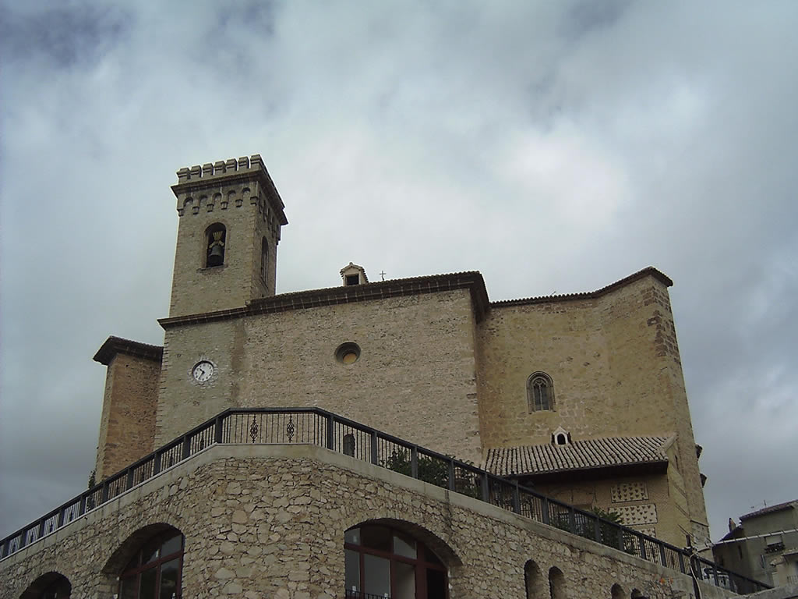

Anterior a la construcción de la estructura del edificio que podemos observar en la actualidad, tenemos referencias de la existencia de un templo gótico del siglo XIV. Parece ser que este templo estaría consagrado a Santa María y contaría con una planta de nave única que sería reformada a finales del siglo XV, según Marcial García. De este edificio del siglo XV, ha llegado hasta nuestros tiempos una pequeña ventana gótica que se conserva en una de las fachadas del templo actual. En 1521 se inician las obras que dotarán al templo del aspecto interior que hoy día podemos observar, se trata de la sala columnaria monumental cuyas obras estuvieron a cargo de Francisco Florentino y a su muerte, de Juan de Marquina. Tras la paralización de las obras durante algo más de veinte años, donde se abandonan algunos proyectos, en 1561 se retoman siguiendo las trazas de Pedro de Antequera y en 1563 se tienen referencias de la construcción de la pared de la plaza. En 1616 comienza una nueva etapa constructiva bajo el encargo que hace el Concejo a Miguel de Madariaga, con el diseño definitivo del edificio, las obras terminan en 1627, Sin embargo en 1631, se construye una nueva sacristía.
La cabecera se sitúa sobre una cúpula acasetonada, que descansa sobre arcos de medio punto. El arco del presbiterio aparece cerrado por una clave heráldica. La capilla mayor está enmarcada por dos columnas jónicas con capiteles dorados y los fustes imitando motivos en piedras preciosas y bronces. Las bóvedas del templo poseen nervios formando decoraciones estrelladas que recuerdan a los complicados techos del gótico final, de hecho, esta es una de las características del estilo columnario al que se adscribe el templo, que ha sido encuadrado como un modelo de iglesia renacentista, pero en la que encontramos muchos elementos tardogóticos. Los nervios están pintados en oro, de la misma manera que los elementos aparecen decorados con acantos sobre una base igualmente dorada. La decoración pictórica del templo no es la original ya que se acometió en 1952. las claves de las bóvedas están decoradas a modo de flores excepto en las de las bóvedas laterales donde se representan la cruz de Santiago y de Caravaca. En el lado del Evangelio, encontramos la capilla del Cristo del Rayo, con una bóveda de madera estofada sostenida por ángeles, con una clave decorada con querubines.